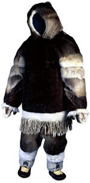

| |
Ethnographic material
has been an integral and treasured part of the British Museum's collections
since its foundation in 1753. The founding collection of Sir Hans Sloane
contained numerous ethnographic pieces of major significance, and wide
geographical spread. These include a shaman's
drum from the Sami peoples of Lapland, cut pile raffia cloth from
the Congo; a pottery effigy vessel from the pre-Columbian Moche culture
in Peru; a split cane lidded
basket from Carolina; snow
goggles from Arctic North America and, interestingly, a slave
drum of Asante origin from Virginia.
The late 18th century was a time of voyages of discovery notably in the Pacific or 'South Sea Islands' area. It was also a time of growing intellectual curiosity and enquiry which manifested itself in the study of the ‘exotic' cultures encountered on such trips. Therefore, largely stemming from the example of Captain Cook and his retinue of scientific recorders, including the botanist Sir Joseph Banks, there emerged the discipline of systematic ethnographic study and the widespread collecting of native objects both for research purposes and as curiosities. Naturally much of this material found a home in the newly established British Museum.
For the rest of the 18th and the first half of the 19th century, the collecting of ethnographic material conducted on behalf of the British Museum remained largely haphazard and opportunistic. There were also many small or individual donations and acquisitions coming into the ethnographic collections during this time. However, with the appointment of A.W. Franks, as Keeper of the Department of British and Medieval Antiquities (which embraced the ethnographic collections) in 1866, a fresh impetus was brought to the collection and display of ethnographic material. During his stewardship, which lasted until 1896, the number of objects increased from 3,700 to more than 38,000.
By far the most significant collection to come into the Museum at this time was the collection bequeathed by Henry Christy on his death in 1865. Christy, who had a scientific and business background, began to travel widely from 1850, collecting thousands of objects. The bulk of his collection was offered to the British Museum by the trustees of his estate (who included Franks). This large collection was also global in its geographical spread, so the Museum could now claim to have a more representative coverage of the world's cultures. Among his collection are the ancient Mexican antiquities which continue today to be a source of wonder, inspiration and study in the Mexican Gallery. Christy also left a sum of money (used to establish the Christy Fund) which allowed for the continued purchase of important collections or individual objects. Departmental records show that this fund was still being used up until the Second World War.
The next Keeper after Franks was C.H. Read, who had been employed by Franks to work on the Christy collections. Under Read, the collections continued to grow and gained wider coverage, not only through exhibition, but also publication. O.M. Dalton, who began working with the Ethnographic collections in 1895, started what was to become The Handbook of the Ethnographical Collection published in 1910. This work was completed by T.A. Joyce who joined the department in 1902. He followed this two years later with A Short Guide to the American Antiquities in the British Museum. Joyce also organised and wrote the official guide for the exhibition in 1923 of Maya casts and objects collected by A.P. Maudslay from Guatemala and Mexico in the 1880s. The exhibition became a permanent fixture in the British Museum until the Second World War. Joyce followed up his interest in the Maya by undertaking a series of British Museum expeditions to British Honduras between 1926 and 1931.
In 1921 there was a reorganisation of the British Museum departments which saw Ethnography allied to Ceramics in a single department with Joyce serving as Deputy Keeper responsible for Ethnography. Twelve years later this became the Department of Oriental Antiquities and Ethnography with Joyce becoming Sub-Keeper of the sub-department of Ethnography.
Joyce retired in 1938 and H.J. Braunholtz became Keeper of the Department of Oriental Antiquities and Ethnography and was effectively in charge of the ethnographic collections throughout the Second World War. On the staff at that time was Adrian Digby who joined the department in 1932 and who, in an unpublished memoir written after he retired, vividly documented the evacuation of the ethnography collections to Drayton House in Northhamptonshire during the war years.
In 1946 Ethnography became a department in its own right with H.J. Braunholtz as its first Keeper. For the following 24 years, the department grappled with its perennial problem of trying to adequately store and display its burgeoning collections. These were considerably strengthened by 3 large and very fine collections which came through some of the most prominent private collectors of ethnographic objects: the first from the widow of H.G. Beasley, in 1944; the next from D.K. Oldman and finally, a selection of the vast amount of material which had been amassed by Sir Henry Wellcome and was donated by the Wellcome Historical Medical Museum in 1954.
Two members of staff who worked under Braunholtz went on to become Keepers of the department themselves. Adrian Digby, Keeper from 1953, was chiefly interested in the Maya but had responsibility for the archaeology and ethnography of the whole of the Americas. He excavated the site of Las Cuevas in Honduras in 1957. William Fagg (Keeper from 1969) had joined the department just before the Second World War and went on to become an acknowledged expert in African art.
By this time it looked as if a solution had been found to the department's chronic lack of space. A building had been acquired in north-east London to accommodate the reserve collections, while the former administrative home of the University of London in Burlington Gardens also became available. This became the Museum of Mankind, the department's exhibition area and administrative centre. The library and study room were also set up in this building and later it acquired a museum shop and lecture theatre.
After the appointment of Malcolm McLeod (Keeper from 1973), the focus of collecting became more defined, with emphasis being placed not just on trying to fill the gaps in the areas which were under represented inthe collections, but to actively pursue fieldwork which could properly record changing contemporary indigenous societies and form the basis for future exhibitions and fruitful collaborations with originating communities. At the same time, the Department continued to acquire significant collections from the traditional means of donation and purchase. One of the most significant collections acquired during this period was the immaculately documented Inverarity Collection of North American material.
For 27 years the Museum of Mankind, with its frequently changing programme of exhibitions and activities presented the public front of the Department in an engaging and stimulating manner. Since the closure of the Museum of Mankind, the Ethnography Department has continued to highlight its collections at the British Museum. Prior to closure we began a series of small ethnographic exhibitions as part of the BP sponsored Ethnography Showcase. This opened in 1996 with Mexican Textiles from the Everts Collection and concluded with Souvenirs in Contemporary Japan We have also organised major exhibitions such as:
Maori (1998), The Golden Sword: Sir Stamford Raffles and the East (1998), and more recent: Unknown Amazon: Culture in Nature in Ancient Brazil and Light Motifs: an Aomori float and Japanese Kites.
The Department returned to Bloomsbury and the structure and title of the Department changed in 2004 from a disciplinary definition to a geographic designation, becoming the Department of Africa, Oceania and the Americas. We now have three permanent galleries at the British Museum, representing Africa, North America and Ancient Mexico. The Wellcome Trust Gallery openeds in 2003 and significant parts of our collection will be integral to the exhibition in the Kings Library which mark the Museum's 250th anniversary. We shall also continue to participate in the museum's temporary exhibition programme and work towards obtaining permanent galleries for those areas in our collections where material is not currently displayed. |
|

Man's
winter outfit, made by Leonie Qrunnut Iglulingmiut, around AD 1985,
from Igloolik, Nunavut, eastern Canadian Arctic
|
|
|
|